GM:方舟
メインログ /
雑談ログ
Character Sheet
| PC1 |
： |
天海こよみ |
|
(キャラシート) |
|
PL |
： |
めい |
| PC2 |
： |
虹之元ユメ |
|
(キャラシート) |
|
PL |
： |
雅 |
| PC3 |
： |
琵琶坂藍依 |
|
(キャラシート) |
|
PL |
： |
ふろずん |
| PC5 |
： |
澱 カシル |
|
(キャラシート) |
|
PL |
： |
タンゴ |
Index
◆Previous Story◆
「明星のレゾナンス」
「こよみとミツキの心海回遊」
「Heaven Gazers」
◆Information◆
NPC紹介
◆Pre play◆
HO&PC紹介
◆Opening Phase◆
01 泡沫のユメ
第1回目開始ポイント
NPC紹介
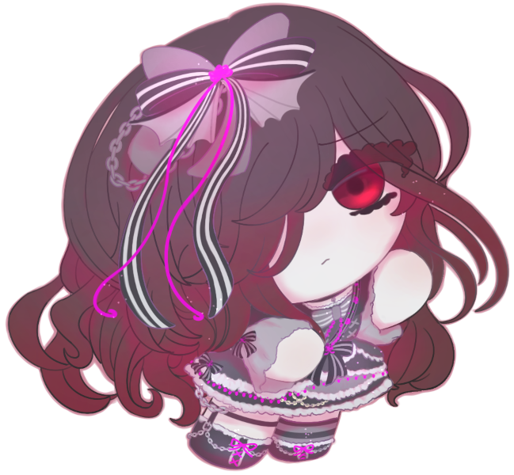
『ルコ』こと、澪木 ルリコ
「”クラッドカルト”を返すつもりはなくってよ。少なくとも、私の目的が果たされるまではね」
享年20歳。アンニュイな雰囲気を纏う女性。整った顔立ちをしているものの、いつも暗い表情を浮かべている。
こよみの母「天海あかり」と同世代のアイドル。本名は「澪木 留璃子」、愛称は「るー子」。
この世界では『ルコ』と名乗っている。故人。
生前のルコ(長い)
活動期間：6年
年齢：14〜20歳(享年20歳)
来歴：
演歌歌手の父、バイオリニストの母を持つ音楽一家の生まれ。
「音楽に関わる仕事をしてほしい」という両親の強い願望があり、幼少期より様々な音楽に触れて成長。
特に、歌唱力が群を抜けていたことから、その才能を買われる形で事務所に所属。美しい容姿や若さもあり、歌手としてではなく、アイドルとしてデビューすることとなる。
同期の圧倒的スター・天海あかりの陰に隠れ気味ではあるが、熱狂的なファンを抱えていた彼女は……成人したその日、自ら命を絶った。
外見：
身長167cm。
烏の濡れ羽色の艶やかな癖っ毛。常に前髪を長く伸ばし、片方の目を隠している。
華奢で女性的な体型。筋肉はほぼついておらず、簡易的なダンス以外は踊れない。
密度の濃い睫毛は常に伏せ気味で、鮮血のように赤い瞳で相手をじっと見据える。
内面：
繊細かつ生真面目な性格。常に周囲を警戒しているような刺々しい雰囲気を纏っており、話しかけるとはっきりとした態度で応対する。
やや根暗な一面があり、ファンや友人などの好意を寄せてくる相手に対しては、どう対処すればいいのか分からず、常に困ったような表情を浮かべている。
愛想を振りまくことが苦手で、笑顔を作ることは滅多にない。
しかし、自分を応援するファンへの愛情は確かにあった様子で、雑誌インタビューでファンへの思いを聞かれた時、「私は口下手だから、ライブの時にはあまり話さないようにしているのですが…」と切り出し、半ページほど饒舌に語っていた記録が残っている。
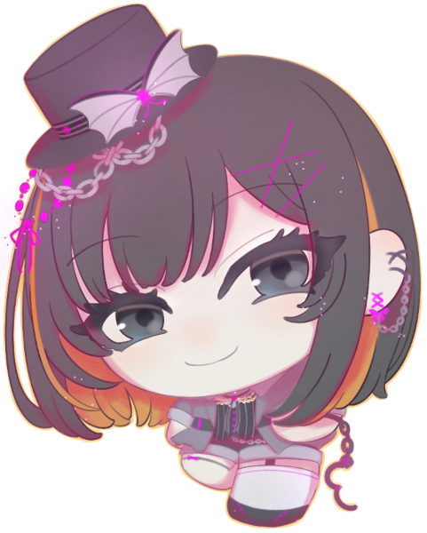
春兎 ユメミ
「……ギター、弾くようになったんだ」
享年17歳。元気で快活、竹を割ったような性格の少女。橙色のメッシュがチャームポイント。
「虹之元ユメ」こと夏橙涙美の親友。軽音部所属。ギターが得意で、歌は壊滅的に下手。将来の夢はミュージシャン。
ジャームの攻撃から涙美を庇い、命を落とした。
生前のユメミ(長い)
来歴：
「ユメち」
バンド好きの女子高生。友人が多く、特に、夏橙涙美とは自他共に認める大親友。
夢は、聴き手に夢と希望を与える『一流』ミュージシャン。
涙美の「アイドルになりたい」という夢を応援しており、自分が楽曲提供するのだと意気込んでいた。
そんな夢を語った日。UGNが取り逃したジャームに、涙美と共に襲われてしまう。死の瀬戸際、涙美を庇う彼女が願ったことは…
外見：
身長159cm。
黒髪のミディアムボブに、夕陽のように鮮やかなオレンジ色のメッシュが入っている。
動きが活発なため、初見では気付き辛いが、意外にも涙美より背が低い。
下半身の肉付きがやや良すぎることを密かに悩んでいるが、ギター演奏時の姿勢維持に役立っているため、そこまで気にしていない。
くるくると良く変わる表情、ぱっちりとしたアーモンド型の目、オニキスのように光る黒い瞳が特徴。
内面：
人懐っこい大型犬のような性格。持ち前のポジティブさで周囲を巻き込むムードメーカーであり、太陽のような存在。
溢れる自信は、彼女の弛まぬ努力に裏打ちされたもの。夢を追いかける上で、妥協は一切しない。気づけば、ギターの演奏スキルは年齢相応以上のものとなっていた。
また、「楽曲提供する」と発言した裏では、コソコソと作曲の勉強をスタートしていた。
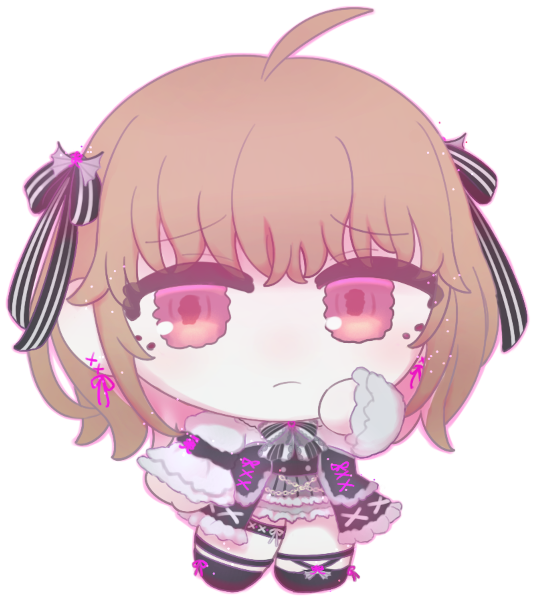
久能 胡桃
「わたしはアイドル失格だって。そう……思っていたのに……」
享年16歳。心優しい少女。
藍依の親友で、メジャーアイドル・Seventh Heavenの元メンバー。ピンク色担当。
「アイドル」という存在に強い憧れを抱いており、親友の藍依と共にデビューを果たしたが、ハラスメントやいじめ等により心が荒み、最期は自ら命を絶った。
生前の胡桃(長い)
活動期間：2年
年齢：14〜16歳(享年16歳)
来歴：
「あるアイドルの死について」
清純派アイドル女子高生。
私立玲瓏女学院の生徒。藍依とは学生寮の同部屋であり、親友。
藍依を巻き込む形で応募した「Seventh Heaven」のオーディションに、共に合格し、夢のようなアイドルライフが始まった…はずだった。
しかし、胡桃はパワハラやイジメ、性接待に近い行為の強要を受け、そのストレスで心が荒み、パフォーマンスが低下していく。
一方、藍依は胡桃の身に起きていることに気づかず、アイドルとしての才能を開花させていく。
胡桃は藍依に嫉妬し、同時に、己の中に生まれた醜い感情に酷くショックを受ける。
「わたしのような穢れた人間は、アイドルにふさわしくない」と苦しみ、藍依に対し「トップアイドルになって」と遺書を遺して、事務所から飛び降り自殺してしまう。
また、自殺する直前に出会った呪い人形・カシルに「貴女はわたくしの指針であり、憧れだ」と伝えられた際、絶望の淵にいた彼女は、「わたしに化けて、わたしの顔でアイドルしてみたら」と返し、その場を去ってしまう。
彼女の真意は…
外見：
身長157cm。
ふんわりとしたミルクティーカラーのボブ、甘いピンクのインナーカラー。
スタイルが良く、同年代の少女と比較すると、ややグラマラスな体型。
特に、胸が大きいことに対してコンプレックスを抱えている。
チャームポイントは、兎のようにクリクリした大きな瞳。
素直な表情を浮かべることが多く、優しそうな垂れ目は、彼女自身の性格を表すかのよう。
内面：
人懐っこく明るい、心優しい性格。
藍依とは、学生寮で同部屋となった際、彼女の看病をしたことがきっかけで親友となった。
人の感情の機微を敏感に察することができる一方で、場の空気を読みすぎてしまうことが玉に瑕。
相手に強く出られると抵抗できない上、自分が本当に辛かった時期にも、「他人に迷惑をかけたくない」と、藍依を含め誰にも悩みを吐露することができなかった。
理想の高さはプロ意識の表れ。歌やダンスの才能に恵まれなかったが、人一倍努力していた。
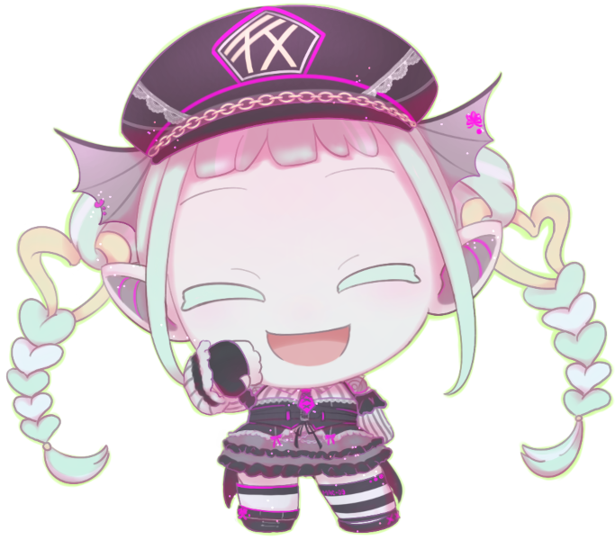
”MAC-09”ココ
「アーハー？なるほどデスねェ。ジブンを疑っていらっしゃルというワケ」
片言を操る、《オリジン・サイバー》のアンドロイド型レネゲイドビーイング。
明るく友好的だが、話をよくよく聞いてみると、芯を食ったことを一言も言っていない。
自称故人だが、『冥界』のイメージとあまりに外れている。ルコを慕う様子が見られる。
”MAC-09”の詳細？(長くない)
外見：
身長152cm。
髪パーツは、ミントグリーンに白色のメッシュのような塗装。ぱっつん前髪と、リング付きエクステのような三つ編みツインテール。
ボディパーツは、グレーがかった白色で、しっとり柔らかなシリコン素材。大きな耳の先は尖っている。
常に目を細めてニコニコと笑っている。
内面：
不明。態度は友好的でよく喋るが、会話の中身は空っぽ。
明確な悪意は感じられない。
Pre play
HO&PC紹介
GM :
それでは卓を始めていきます。まずは自己紹介から…こよみちゃん！お願いします！
天海こよみ :
はーい！
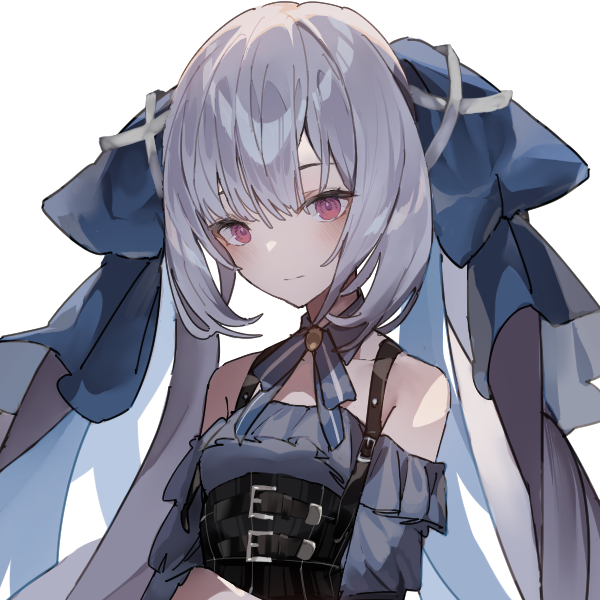
天海こよみ :
こよみです、ミツキちゃんが大好きな14歳の幼女です！
天海こよみ :
人間が持って生まれたスキルポイントをアイドルの才能に全部注ぎ込んだ結果生まれた、不登校の社会不適合者です！
天海こよみ :
でもこれまでNPCとして二回位出た分色々あったので、クラちゃんの力なんて関係なくなるような凄いアイドルを目指そうとなって、それに伴って学校にも通うようになりました。
天海こよみ :
データとしての成長は、この子の意思が低いわけないと思ったので上げて、それなら暴走しなくなるしせっかくだからカバーリングエフェクトを取ろうってした感じがメインです。
天海こよみ :
久しぶりにPCとして頑張るよ！ 以上です、よろしくおねがいします！
GM :
ありがとう！序盤からめちゃくちゃ成長してるよね…めいちゃんGM卓ではNPCとしてもよう活躍しとる
GM :
そんなこよみちゃん、今回のハンドアウトはこちら！
🩵PC1 “スカイクラッド” 天海こよみ
ロイス：ルコ
推奨感情 P:尊敬 / N:不信感
キミはアイドルだ。
引き籠っていた過去や数々の事件を乗り越え、MARiNE SNOWのメンバーたち、キミの憧れでありマネージャーの十条ミツキ、今や妹のような存在である”クラッドカルト”ことクラと、それなりに幸せなアイドルライフを過ごしていた。
ところが、ある日のライブ終わり、突如クラがキミの目の前で誘拐されてしまう。
誘拐された彼女を追いかけた先に広がっていたのは、『冥界』と呼ばれる異世界。
そして、待ち受けていた、クラッドカルトの誘拐の首謀者は……かつて、母の天海あかりがキミに語った、彼女の同世代のアイドル・澪木ルリコだった。
GM :
なんか…クラちゃんが拐われるので、頑張って取り戻してあげてください！
天海こよみ :
ずっと未遂で済んでたけどついに本当に攫われてしまったよ！ 帰っておいで
天海こよみ :
ルコちゃん、ハンドアウトとか関係なく見た目がきゃわでばちくそ好みなので…穏便に取り戻したいね…！
GM :
ふふふ…果たしてどうなルコねぇ…
GM :
よろしくお願いします！
天海こよみ :
楽しみ！ お願いします！
GM :
では次！ユメち！
虹之元 ユメ :
はい！
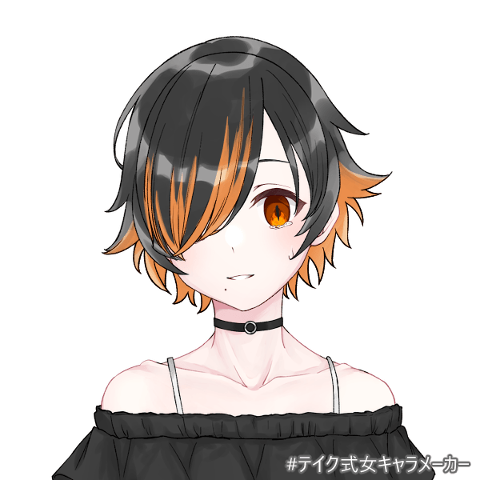
虹之元 ユメ :
MARiNE SNOWのオレンジ担当！ 夏橙涙美こと、虹之元ユメです！
虹之元 ユメ :
とあるジャームが引き起こした事件で親友を失い、その遺志を継いでアイドルを志す女の子！
虹之元 ユメ :
少し前に異世界にちょっとだけ攫われて、そのコピーが斧を振り回したり人魚姫になったりしてました！
その記憶がほんのちょっとだけ有るような、無いような気もします！
虹之元 ユメ :
最近はみんなの成長が目覚しくて、少し、まあまあ、ほんのちょっとだけ……焦ってはいるけど嬉しい気持ちでいっぱいです！
虹之元 ユメ :
今日も元気いっぱいで頑張ります！ よろしくお願いします！
GM :
ありがとう！童話卓では何やら大変だったね…現実の方も、今回は頑張ってもらうぞ。ハンドアウトはこちら！
🧡PC2 “涙の旋律”虹之元ユメ
ロイス：春兎 ユメミ
推奨感情 P:友情 / N:悔悟
キミはアイドルだ。
かつて親友のユメミに語った「アイドルになりたい」という夢を実現するべく、歌にダンス、ギター、作曲と、多忙のアイドルライフを送っている。
しかし、最大限の努力をしている一方で、自分以外のMARiNE SNOWメンバーにスキルが劣り、置いて行かれているような感覚があり、内心焦りを覚えている。
そんな中、誘拐された”クラッドカルト”を追った先に広がる『冥界』で、故人であるはずの春兎ユメミと再会する。
キミは彼女に話しかけようとするが、ユメミの対応はぎこちない。それはまるで、キミとの会話を拒否しているかのようで……
GM :
色々…色々あります！今回のシナリオはユメち軸っぽいところがあったりなかったり…もにょ…です
虹之元 ユメ :
ユメミちゃん！ ユメミちゃんじゃないか！ 地力で蘇生を！？
虹之元 ユメ :
な、何かがある！ 精一杯に受け止めようじゃあないか！
GM :
GMにとっても未知数ですが何卒…頑張れ！(ユメちには禁句)
GM :
よろしくお願いします！
虹之元 ユメ :
頑張ります！（十八番） よろしくお願いします！！
GM :
ありがとう！それでは次、iRiSちゃんことビワちゃん、お願いします！
琵琶坂 藍依 :
はいな！
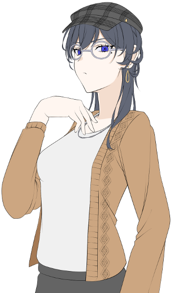
琵琶坂 藍依 :
琵琶坂藍依！ アイドル名はiRiS！
琵琶坂 藍依 :
メンバーのいじめ自殺の濡れ衣を着せられて表舞台を去った、元メジャーアイドルです！
琵琶坂 藍依 :
自殺してしまったメンバー、HOロイスの『久能胡桃』から「トップアイドルになってほしい」と願いを託された過去があり、
琵琶坂 藍依 :
【明星のレゾナンス】では、罪悪感や義務感で「胡桃の願いを叶えなきゃいけない」とトップアイドルを目指していました。
琵琶坂 藍依 :
が【Heaven Gazers】では、とあるファンとの対話によって過去と向き合い「結局、自分がそうしたい」との気付きを得て、
琵琶坂 藍依 :
肩の力が抜けて、胡桃のために、ファンのために、何より自分自身の意志でトップアイドルへの道を歩むようになりました。
琵琶坂 藍依 :
戦闘スタイルも、隠密射撃型から白兵戦闘型に。自分に胸を張って正々堂々と戦うぞ。
琵琶坂 藍依 :
余談になりますが、アイドル技能の<芸術:歌唱><芸術:ダンス><芸術:演技>が少し伸びて、<芸術:舞台演出><知識:トーク><知識:ファンサービス>など、エンタメ方面の技能が増えました。
琵琶坂 藍依 :
パフォーマンス自体の巧さよりも、ファンを楽しませるアイドルになるという意識の表れですね。
琵琶坂 藍依 :
以上！ 新生iRiSをどうぞよろしくお願いします！
GM :
ありがとう！設定時点から苦悩ばかりだよ、久能胡桃ちゃんとどっこいだよ…(？) それでも確実にポジティブな方面に進んでる…そんなビワちゃんのハンドアウトはこちら！
💙PC3 “iRiS”琵琶坂藍依
ロイス：久能 胡桃
推奨感情 P:友情 / N:悔悟
キミはアイドルだ。
メジャーアイドル時代の壮絶な引退騒動、MARiNE SNOW所属後の事件など、数々の苦難を乗り越えてきた。
現在は、亡き親友・久能胡桃の遺言であり、キミ自身の夢でもあるトップアイドルを目指して、アイドルライフを送っている。
そんな中、誘拐された”クラッドカルト”を追った先に広がる『冥界』で、胡桃と再会する。
夢をキミに託し、自ら命を絶った彼女は……冥界で、アイドル活動を……？
GM :
トップアイドル…託されたはずでは…！？という謎の事態が起きています…
琵琶坂 藍依 :
地下アイドル超えて、冥界アイドルしてるよ…
GM :
今回のシナリオのネタ元に「地底アイドル」というシャレがあったので半分正解(？)
GM :
今回もなんとか前進してくれ…よろしくお願いします！
琵琶坂 藍依 :
折れない光のアイドルでいられるのか！ よろしくおねがいします！
GM :
ありがとう！では最後、カシルちゃん！
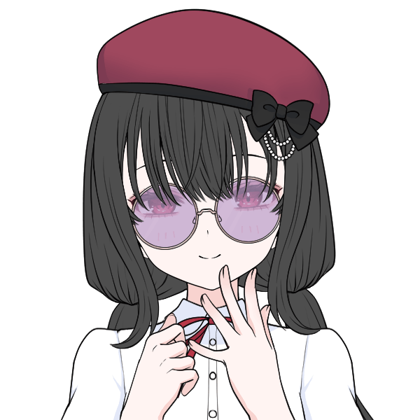
澱 カシル :
地下アイドルグループ、MARiNE SNOWに所属し幾分か経験を積んできたアイドル。
今までどおり元気と可愛らしさをウリにしつつも、ファンからの評価であった『どこかミステリアス』をプロデュースに取り入れるようになって芸風も増えている。
以前は"呪い人形"と呼ばれた危険なレネゲイドビーイングであったが、現在では落ち着いて振る舞えるようになった。
澱 カシル :
補足しておくと、自己嫌悪が原因で存在価値の証明＝アイドルに固執するあまり精神不安定でした！
色々あってある程度は改善した！
澱 カシル :
ビルドはRC型になりました！
バフもりもりしてメイン行動増やして殴るスタイルは変わらず！
澱 カシル :
以上！
GM :
ありがとう！ワンチャン、グループの中で一番前向きになっているような…落ち込み期を抜けてバリバリ活躍してほしいね。ハンドアウトはこちら！
🩷PC5 “呪い人形” 澱カシル
ロイス： ”MAC-09”ココ
推奨感情 P: 親近感/ N:不信感
キミはアイドルだ。
数々の事件を乗り越え、そして、呪われた出自や『久能胡桃』の最期の言葉を一旦飲み込み、自分自身の想いのため、アイドルライフを送っている。
同族嫌悪に似た感情を寄せていた”クラッドカルト”ことクラに対しても、昔ほどの悪感情は抱いていない。
ある日のライブ終わり、突如クラがキミの目の前で誘拐されてしまう。
『彼』が誘拐される直前、キミは同族……レネゲイドビーイングの気配を察知する。
クラを追った先に広がる『冥界』、そこでキミたちを迎え入れたのは、胡乱なレネゲイドビーイング・”MAC-09”ココだった。
……いくら何でも怪しすぎる…！
澱 カシル :
誰だお前は！？
GM :
一番意味のわからんハンドアウトで申し訳ないが…という…
GM :
マリスノのピンク兼レネゲイドビーイングとして頑張っていただきたく
澱 カシル :
まあ一番の因縁はクラッドカルトだったからね！
さっさととっ捕まえて帰りましょう
GM :
とっ捕まえる、味方に使う表現じゃない
GM :
よろしくお願いします！
澱 カシル :
よろしくお願いします！
GM :
これでMARiNE SNOW現メンバーの自己紹介が終わりましたね！それでは早速卓を始めていきます…！
Main play
Scene01 泡沫のユメ
GM :
登場PCはPC2、ユメちです。ただ、序盤は他のみんなにもNPC扱いで登場してもらいます！
GM :
ユメち、登場侵蝕どうぞ！
虹之元 ユメ :
1d10+34 ユメち一番乗り！(1D10+34) ＞ 3[3]+34 ＞ 37
GM :
あみぃ・らむねの襲撃から4ヶ月、五十嵐タクミの事件から2ヶ月、そして、海霧・海里との邂逅と別れから1ヶ月。
GM :
様々な事件を乗り越え……そして、メンバーの一人である夢川めめのグループ卒業を経て、MARiNE SNOWの躍進は続いていた。
GM :
未だ地下アイドルの枠に収まってはいるものの、各メンバーのフォロワー数や、動画サイトでのMV再生回数は上昇傾向。
GM :
曲がショート動画の音源に使用されることも度々あるようで、（プロデューサーは「MARiNE SNOWの曲は早回しで消費されるべきものでは…」とぼやいているが）着々と知名度は広がっている。
GM :
こよみに取り憑く”クラッドカルト”ことクラも、落ち着いた様子で日々を過ごしている。
GM :
グループは、極めて順風満帆といえるだろう。
GM :
そして、1ヶ月後のクリスマス。キミたちは、深夜放送の小さな音楽番組への出演が決定している。
キミたちは、UGNのセーフハウス内にあるスタジオで、ボイストレーナー指導のもと歌の練習していた。
GM :
練習には、キミたちのマネージャーであり、元アイドルの十条ミツキも同席している。別業務を進めるため、室内にパソコンを持ち込んでいるが……たまに渋い顔をしてパソコンを打ち込む以外、画面をほとんど見ていない。
GM :
苦手なパソコン作業をするよりは、キミたちの練習風景を見る方が楽しいのだろう。
虹之元 ユメ :
「～♪ ～～♪♪」 指導の通りに、よく通る声を響かせる
虹之元 ユメ :
「……っと。声の出はだいぶ良くなった気がします！」 満足そうに頷いて
琵琶坂 藍依 :
「うん、ボイストレーニングの成果が出たねユメ」
虹之元 ユメ :
「はい、おかげさまで！ ただ、まだまだ勉強ですね……！」 いつも通り、琵琶ちゃんにニコリと微笑んでみせる
天海こよみ :
「……」 その隣でちゃんとレッスンしてはいるが、たまにミツキの方を見ては目を合わせて小さく笑ったりしている人がいる
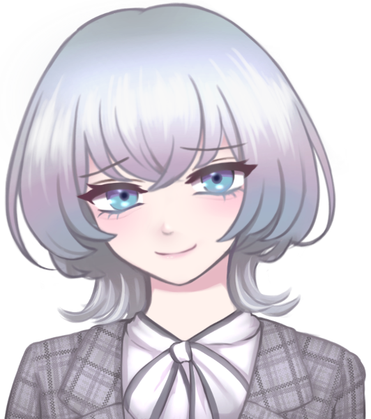
十条ミツキ :
「…」おや、という顔をして、少し困ったように笑いかける。
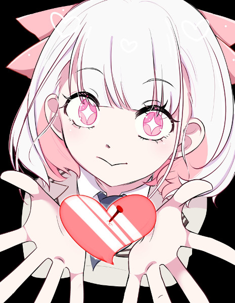
澱 カシル :
「こよみちゃん、あんまりミツキちゃんの邪魔しちゃダメですよ〜？」
いたずらっぽく笑いかけながら注意する。
天海こよみ :
「え……？ し、してないよ……？」
澱 カシル :
「さっきからチラチラ見てて、お互いに集中できてませんよ！ ほんとにもう！」
琵琶坂 藍依 :
「……まあ、まわりを見る余裕があるのは結構なことだけどね？」笑って
十条ミツキ :
「えっ…あ、アタシも！？」心外だよ、とでも言いたげな顔をしているが事実である
虹之元 ユメ :
「ふふふ、ずっと仲がよろしくて良いことじゃないですか」微笑ましくその様子を眺める
澱 カシル :
「仲が良いのは良いですけど！ 練習は真面目にやらないと！」
ふんす、と気合を入れる
天海こよみ :
「それもそっか……わかった……。ちゃんとまじめにやるね……」
天海こよみ :
「ミツキちゃんも、まじめにパソコン？ やろっか……」 何の業務なのかはわかっていない
十条ミツキ :
「うぅ、仕方ない…嫌なんだよキーボード、スマホじゃダメなのかなぁ…」いやいやだが、こよみに言われてしまっては仕方ない、といった様子でパソコンに向き合う。
天海こよみ :
「ふふっ……。がんばって……！」 ぎゅっとミツキの両手を握って応援していく
十条ミツキ :
「…立派になったね…」しみじみとした様子で手を握り返し、レッスンに戻るこよみを見送る
澱 カシル :
「うんうん！ 張り切っていきましょう！」
自身のボイスレッスンを再開する。
練習の成果もあって、表現力の無さも改善してきている。
虹之元 ユメ :
「はい！ あっ、そうだカシルちゃん。ここの部分なんですけど～……」そういって苦手な部分を相談しにいく
GM :
ユメがカシルに話しかけに行こうとしたところで、その場にいたボイストレーナーがパン、と手を叩く
トレーナー :
「OK、一旦全員で合わせてみようか！動けそうな人はダンスで体を動かしながら歌ってみて！」
GM :
キミたちはトレーナーの指示に従い、何となくのポジションにつき……伴奏に合わせて、歌い始める。
GM :
ユメは、ふと隣にいる仲間たちを目にする。
GM :
アイは言うまでもなく、元地上アイドルとして恥のない、堂々たるパフォーマンスを繰り広げている。歌唱力はダントツのグループトップだ。MARiNE SNOWにも馴染み、初期よりも深く、輝く声を響かせる。
GM :
カシルは、当初こそ謎に満ちた仲間だったが…今は己が理想とするアイドルに近づくため、彼女だけの色で輝く術を掴み始めている。ダンススキルに至っては、もしかすると彼女に追い抜かれてしまっているかもしれない。
GM :
そしてこよみは、キミと共にアイドルとしてスカウトされた、いわば同期のような存在だが…元から持ち合わせていた天性の才能に加え、アイドルを楽しもう、今が一番楽しいと、目の輝きが語りかけてくるようなパフォーマンスを魅せている。
GM :
傍から見て、決してキミが劣っているわけではない。だが…彼女たちの輝きに、自分が追いつけているのか？仄かだが確かな焦りが、キミをジワジワと追い詰めている…
虹之元 ユメ :
「────────」 様々な想いが思考を埋め尽くす。まずは焦燥と羨望……。
虹之元 ユメ :
次に湧いて出るのは自身へのやるせなさ、埋まらない経験と才能の差。
虹之元 ユメ :
「（違う、違う……！ みんな必死にやってるから出来てるんだ、羨んでばかりじゃダメ……！）」
虹之元 ユメ :
淀んだ思考は四肢の動きを鈍らせる。傍から見れば殆どの人間が気づくことはないだろうが……
虹之元 ユメ :
振付けの動きを、一瞬だけ間違えた。
虹之元 ユメ :
「（うっ……！）」 気を取られれば集中は乱れる。瞬時にカバーするが、ほんの僅かにみんなと動きが合わない。
虹之元 ユメ :
まるで音のズレた映像を見させられているかのような、絶妙な気持ち悪さ。
それをユメは、レッスンルームの鏡越しにまざまざと見せつけられている。
虹之元 ユメ :
表情も硬く、動きのキレも劣る。
アイドルになる時に抱いた大層な夢と、目の前の現状にユメは……徐々に擦り切れていた。
GM :
……キミが思う以上に、顔に出ていたのか。見かねたボイストレーナーが、伴奏の手を止める。
ボイストレーナー :
「一旦ストップ！お水飲んで、楽にしていいよ〜」
GM :
全体にそう声をかけながら、ユメに近寄って話しかける。
ボイストレーナー :
「ちょっと、ユメち…大丈夫？顔、真っ青だよ」
虹之元 ユメ :
「えっ……」 眉間を抑え、ぼーっと床を見つめていたユメは顔を上げる
虹之元 ユメ :
「あっ、ごめんなさい……！ ちょっと、考え事を……」 ぐしぐしと顔を拭って、いつもの表情を心掛けようとする
ボイストレーナー :
「大丈夫だよ〜ユメち、リラックスして…ちょっと疲れちゃったかな…」肩に手を当てて、ほぐすようにゆっくりと肩を動かす
澱 カシル :
「大丈夫ですか？ 体調がすぐれないのなら、今日は早めに切り上げてもらいましょうか？」
体調によるものでは無いと、何となく察してはいるが……そう促す。
虹之元 ユメ :
「だ、大丈夫です！ ご心配いただいてありがとうございます……！」 たはは、と困ったように笑って
虹之元 ユメ :
「まだまだ課題はありますし、先の事を見据えれば時間も足りないかもしれません……！」
虹之元 ユメ :
「だから、私……」胸元でぎゅっと握り拳を作って
虹之元 ユメ :
「まだ、頑張れます」 いつもの笑顔で、そう呟いた
澱 カシル :
「ううん、そこまで言うのならいいのかな？ ミツキちゃん、どうしましょう？」
マネージャーに最終判断を委ねる。
琵琶坂 藍依 :
「…………」マネージャーの判断を待つ。まだ自分の出る幕じゃない。
十条ミツキ :
「……そうだね。レッスンを始めてまあまあ時間も経つし……一旦、今日のところはおしまいにしようか。明日もライブがあるし、そんな急ぐことはないと思う」
十条ミツキ :
「みんなが真剣に頑張ってる姿は、トレーナーさんもアタシも、ちゃんと見ているよ。大丈夫、みんなで確実に、一歩一歩前進しているから」皆を勇気づけるように笑う
ボイストレーナー :
「…そうだね、ミツキちゃんがそう言うなら。それじゃ…今日のところはおしまい！また何かわからないことがあったらDMしてね〜」
GM :
ユメの不安が波及する中、その雰囲気を断つように、2人の指導者はそう告げる
虹之元 ユメ :
「は、はい。ありがとう、ございました……」 もしかしたら自分のせいで中断させてしまったかも、と自己嫌悪しながら頷く
琵琶坂 藍依 :
「ありがとうございました！」この業界は挨拶に始まり挨拶に終わる。
天海こよみ :
「ました……」 ユメのことが気になって、そちらをずっと見てる
澱 カシル :
「……ふう、有難う御座います。皆様、お疲れ様でした。」
白とピンクのアイドルの姿から、一瞬にして黒い少女へと変わる。
オフの時はこちらの素の姿……呪い人形としての元の姿を隠さなくなったのだ。
天海こよみ :
「……ねえ、ユメちゃん」 ユメの手を取って
虹之元 ユメ :
「ん、どうしましたか？」 こよみに目線を合わせて
天海こよみ :
「…………」 じーっと目を見つめてから
天海こよみ :
「ううん、よんだだけ……」 そのままユメの手をぷにぷに押してハンドマッサージしている。励ましてるのかもしれない
虹之元 ユメ :
「そ、そうなんですか～？」 ぷにぷにされながら、ありがとうございますと笑いかける
天海こよみ :
「そうなんです……ふふっ」 ぷにぷにしながら小さく笑って
澱 カシル :
「………ふふ。」
「さっき相談を受けかけてましたので……必要であればまたお答えしますよ。」
澱 カシル :
「他の相談も有るのであれば、答えるのはやぶさかではありません。」
「………いつでも構いませんので。」
虹之元 ユメ :
「カシルちゃんもありがとうございます……！ そうですね、ええっと……」 少し考えて
虹之元 ユメ :
「レッスンの苦手な部分の復習とか、色々とお聞きしたいことがあるのですが……」 うぅん、と唸って
虹之元 ユメ :
「……じゃあ、一つだけいいですか？」時間のことを気にしてだろうか、人差し指を上げて微笑む
澱 カシル :
「……まあ、急がなくてもいいんですよ？」
虹之元 ユメ :
「そ、そうですか？ 急ぎすぎ、ですかね？」
澱 カシル :
「………後で幾つでもお答えします。」
「其れは其れとして、今お一つ有るのであれば。まずはそちらを伺いましょう。」
虹之元 ユメ :
「そう、ですね……。稚拙で恥ずかしい話なんですけど……」迷ったように目を左右に泳がせて
虹之元 ユメ :
「……どうしたら、自分を好きになれますでしょうか」ポツリと
虹之元 ユメ :
「あ、いえ！ どうしたら自信が持てるか、で大丈夫です！」 慌てて訂正する
澱 カシル :
「…………。」
「其れは……難しい話ですね。」
「只、此の場で言える事が有るとすれば……。」
澱 カシル :
「ユメさんは、ユメさんで在る。」
「其れだけです。わたくしもまだ道半ば。多くを語れはしません。」
澱 カシル :
「……申し訳ありません。」
虹之元 ユメ :
「私は、私……」何か思い当たる節があるのか、ほんの少し俯いて
虹之元 ユメ :
「いえいえ、ありがとうございます！ そうですね、自分を省みるのも良いのかもしれません……」
天海こよみ :
「ぼくはユメちゃんのこと、大好きだけどな……」 ずっとおててぷにぷにしながら、ぽつりと呟く
虹之元 ユメ :
「ふふ、こよみちゃんも嬉しいことを言ってくれますね～！ あっ、ちなみに……」
虹之元 ユメ :
「ミツキちゃんと私とだったら、どっちが好きですか？」 意地悪な顔をして
天海こよみ :
「え……！？」 顔をバッと上げて
天海こよみ :
「え、えっと……」
天海こよみ :
「……う、うーん……。ん、んん……」 当然答えはミツキになるが、かといってユメのことが好きじゃないというわけではないため、どう答えればいいか分からず、唇をぎゅっと結んでプルプル震え始める
虹之元 ユメ :
「あはっ、大丈夫ですよ～。ちゃんとわかってますから！」 冗談めかして笑い、ぽんぽんと頭を撫でて
天海こよみ :
「も、もう……ユメちゃん……」 困った顔で頭を撫でられてる
澱 カシル :
「ふふ、ユメさん。こよみさんはからかいがいのある方ですが、程々に。」
琵琶坂 藍依 :
「────コヨミのことを赤面させて、どうかしたの？」レッスン道具を片付けてから、メンバーのもとに歩み寄ってくる。
天海こよみ :
「せ、赤面……してた……？」 恥ずかしそうに両手を頬に添える
澱 カシル :
「……ふふ、椿色でしたよ？」
琵琶坂 藍依 :
「色白なぶん、コヨミは顔に出るよね」
虹之元 ユメ :
「よく映えますからね～。それはそれとして、琵琶ちゃんもお疲れさまです！」
澱 カシル :
「すみません、有難う御座います。」
片付けをさせていたことに謝罪する
琵琶坂 藍依 :
「ううん、気にしないで」
琵琶坂 藍依 :
「……それよりユメ、疲れているのは君の方じゃない？」
虹之元 ユメ :
「わ、わぁ……やっぱり疲れているように見えますかね？」 頬をぽりぽりと掻いて
琵琶坂 藍依 :
「うん、さっきも一瞬、集中が欠けてたでしょ？」
琵琶坂 藍依 :
「……睡眠時間、ちゃんと取ってるの？」
虹之元 ユメ :
「ええっと……一昨日に寝たので、今日は寝る予定ですね！」
琵琶坂 藍依 :
「ユメ……」咎めるような声色
琵琶坂 藍依 :
「カシル、は寝なくていい体質なんだっけ……コヨミからも何か言ってあげてもらえる……？」
天海こよみ :
「え……。毎日ねた方がいいと思う……」
澱 カシル :
「やはり人間は毎晩寝るべき、なのですね。」
「わたくしは不眠の存在ですが、精神の休息自体は必要です。」
「ユメさんの休息が不足なのであれば、睡眠は取るべきかと。」
琵琶坂 藍依 :
「……人間は睡眠によって、経験を身に着ける生き物だからね」
琵琶坂 藍依 :
「単なる休息以上に、色々な意味があることなんだ」
虹之元 ユメ :
「は、はいぃ……耳が痛い限りです～……」
虹之元 ユメ :
「（……でも、そうでもしないと置いて行かれちゃうかも……）」声には出せずに、口をもごつかせる
琵琶坂 藍依 :
「……ほんとに反省してる？」困ったように
天海こよみ :
「今日はちゃんとおやすみしようね……」 ユメを見上げ、その手を心配そうに握る
澱 カシル :
「睡眠については実感がありませんが……」
「必要であればお手伝いしましょう。」
「布団の上に座ったり……とか……でしょうか？」
虹之元 ユメ :
「そう、ですね。今日はちゃんと寝……カシルちゃんの、重石……？たしかに重い布団は良質な睡眠が取れると聞いたことが……」
琵琶坂 藍依 :
「普通、添い寝とか寝落ち通話とかじゃないかな……」
澱 カシル :
「……ああ、なるほど。」
「読み聞かせ、なんてモノもありましたね。」
「眠れない時は、いつでも言っていただければ……。」
「旧い話は沢山知っておりますから、何かお聞かせしましょう。」
虹之元 ユメ :
「わあ、良いインスピレーションが得られそうです……！」
琵琶坂 藍依 :
「インスピレーション……？ 寝る気ある……？」
虹之元 ユメ :
「も、もちろんです……！ メモとかして寝ます……！」
天海こよみ :
「ユ、ユメちゃん、今日はぼくとねる前に電話しよ……！ はい、やくそく……！」 本気で心配になってきたのか、無理矢理お互いの小指を結ぶ
虹之元 ユメ :
「だ、大丈夫ですか？ でも、はい……楽しみにしてますね……！」小指を握り返して
天海こよみ :
「うん……！」 絶対寝るのを見届けるぞという強い意志
GM :
ユメは皆に心配されつつも、帰路につく。……焦燥や嫉妬でないまぜとなっていた心が、やや楽になったように感じるだろう。
GM :
帰宅後。ユメは……涙美は、1日ぶりにベッドに入る。こよみの監視もとい寝落ち通話のおかげもあり、無事、眠りにつくことができた。
GM :
そしてキミは…夢を見た。何度も見た夢。後悔の記憶。あの日の記憶。
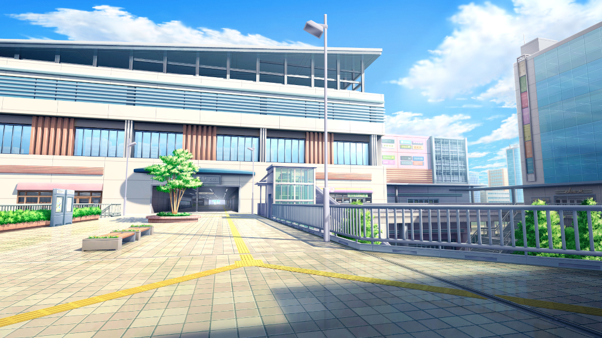
GM :
この日の空は曇りのち晴れ、稀に雲間から太陽が覗くありふれた天気だった。駅前の集合場所に到着したキミは、親友の姿を見つける。
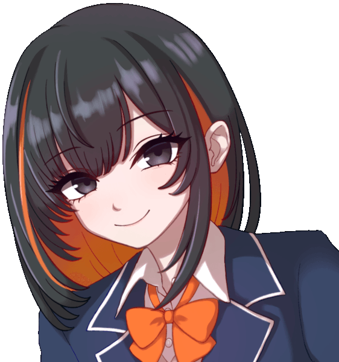
GM :
春兎ユメミ。キミの大親友。大切な人。そして…
GM :
もう、遠いところに行ってしまった存在。
虹之元 ユメ :
現ではない存在、今や心の中にしか住まわない亡霊に微笑みを向ける。
ジクジクと痛む心はいつものことで、彼女の目を見られないまま、口元に視線を向けながら口を開いた。
虹之元 ユメ :
「おはよう、ユメミちゃん」やや震えた声で、親友に語り掛ける
GM :
キミが声をかけると、彼女はパッと花が開いたような笑みを浮かべる。
春兎ユメミ :
「こら〜っるみるみ！ そんなシケたお顔してどうしちゃったんだよ〜、せっかくアタシちゃんと遊べる日だってのにさ！」
GM :
そう言ってキミの肩をギュッと抱く。夢だと理解しているのに、記憶は残酷なまでに、あの日の手の感触を完全に再現してくる。
虹之元 ユメ :
「あはは……。ユメミちゃんはいつも……今日も、元気ですねっ」空元気を振り絞って、肩の手にそっと自身の手を重ねる
春兎ユメミ :
「あたぼうよ！なんと言っても、アタシの大大だーい好きなるみと遊べる日なんだからねっ」何やら得意げに笑いつつ、キミの手を取る。
春兎ユメミ :
「ほら、行こうぜ〜！」
GM :
彼女はキミの手をぐいぐいと引っ張る。
虹之元 ユメ :
「まったくもう……。はいはい、今日はどこまで行くんでしたっけ？」 呆れたように笑って、手を引かれていく
春兎ユメミ :
「今日は〜、え〜っと……全部！全部やる日！まずはタピオカ飲んで〜、カラオケ行って〜…」むむ〜っと唸りながら指折り数えつつ、前へ前へとずんずん進んでいく…
虹之元 ユメ :
「焼肉で、優勝……」昔の彼女が言った、昔の冗談を涙美はまだ覚えている。
To Be Continued...
CREDIT
テイク式女キャラメーカー
みんちりえ
moff
本作は「矢野俊策」「有限会社ファーイースト・アミューズメント・リサーチ」「株式会社 KADOKAWA」が権利を有する
『ダブルクロス The 3rd Edition』の二次創作物です。
©︎ 矢野俊策/F.E.A.R.